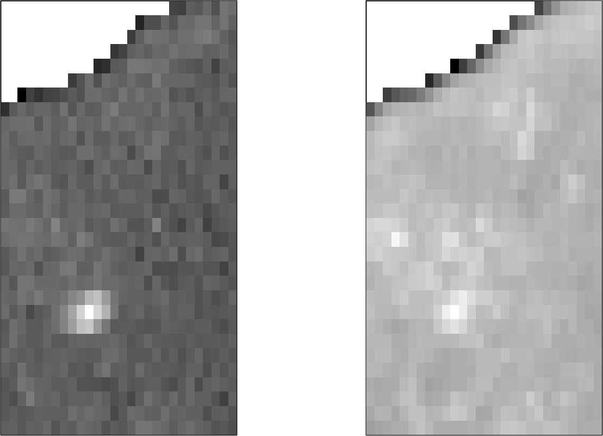
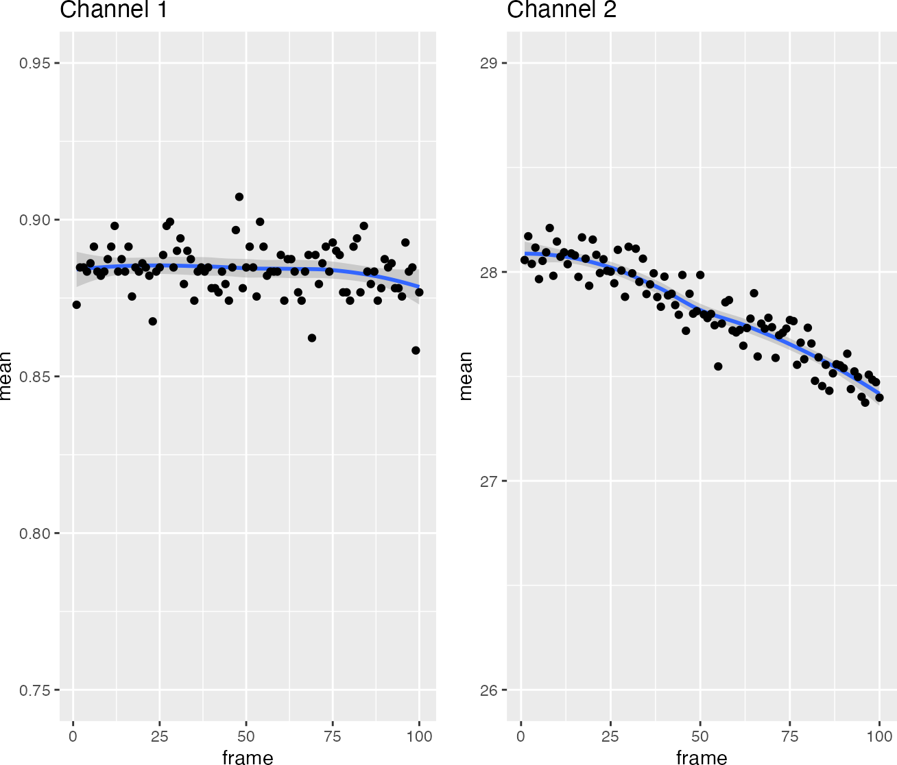

Detrending single images
Rory Nolan
2023-01-27
Source:vignettes/single-images.Rmd
single-images.RmdIn this vignette, we will look at detrending single images interactively in an R session.
First let’s load detrendr and ijtiff, which is for reading TIFF files:
pacman::p_load(detrendr, ijtiff)An image in need of detrending
The package contains a sample image series which can be found atsystem.file("extdata", "2ch100frame.tif", package = "detrendr"). It’s 2 channels each with 100 frames. Diffusing fluorescent particles are imaged. Protein A is labelled with a red dye and red photons are collected in channel 1. Protein B is labelled in green and green photons are collected in channel 2.
The image can be read into R with the read_tif() command provided by the ijtiff package. We’ll assign it to a variable called my_img.
path <- system.file("extdata", "2ch100frame.tif", package = "detrendr")
print(path)#> [1] "/Users/runner/work/_temp/Library/detrendr/extdata/2ch100frame.tif"
my_img <- read_tif(path)#> Reading 2ch100frame.tif: an 8-bit, 30x28 pixel image of
#> unsigned integer type. Reading 2 channels and 100 frames . . .#> Done.my_img is now a 4-dimensional array. Slots 1 and 2 hold the y and x pixel positions, slot 3 indexes the channel and slot 4 indexes the frame.
dim(my_img)#> [1] 30 28 2 100Plotting the mean intensities of the frames in the two channels, we can see that the second channel has more obvious bleaching.
#> Warning: Removed 1 rows containing non-finite values (`stat_smooth()`).#> Warning: Removed 1 rows containing missing values (`geom_point()`).
However, notice that channel 2 bleaches from 29 to 27 which is approximately 7%. That’s not much, so little correction will be necessary. This is good, you should always endeavour to keep bleaching below 20% and bleaching correction (detrending) should be viewed as a necessary evil.
The mean intensity of channel 1 is 0.81 and the mean intensity of channel 2 is 25.13. Let’s view the mean intensity images of channels 1 and 2.
#> Using basic display functionality.
#> * For better display functionality, install the EBImage package.
#> * To install `EBImage`:
#> - Install `BiocManager` with `install.packages("BiocManager")`.
#> - Then run `BiocManager::install("EBImage")`.
#> Using basic display functionality.
#> * For better display functionality, install the EBImage package.
#> * To install `EBImage`:
#> - Install `BiocManager` with `install.packages("BiocManager")`.
#> - Then run `BiocManager::install("EBImage")`.Thresholding
You can see here that this is an image of part of a cell, with the edge of the cell across the top left and hence the top left corner of the image is not cell, just background. It’s important to threshold away this background part: the detrending routine assumes that all parts of the image are part of the region of interest (the cell), so we need to set the background parts to NA beforehand to tell the detrending routine that this area should be excluded. detrendr has all of the thresholding functionality of the ImageJ Auto Threshold plugin. You can read more about this at https://imagej.net/Auto_Threshold. My favourite method is Huang. Let’s look at both of these channels with Huang thresholding.
#> Using basic display functionality.
#> * For better display functionality, install the EBImage package.
#> * To install `EBImage`:
#> - Install `BiocManager` with `install.packages("BiocManager")`.
#> - Then run `BiocManager::install("EBImage")`.
#> Using basic display functionality.
#> * For better display functionality, install the EBImage package.
#> * To install `EBImage`:
#> - Install `BiocManager` with `install.packages("BiocManager")`.
#> - Then run `BiocManager::install("EBImage")`.
That seems to have worked: the background region in the top left is now greyed out, indicating that it has been set to NA. Huang thresholding can be slow, so if you want something similar but faster, try Triangle. Always check that your thresholding looks right afterwards.
Thresholding of images is done with the autothresholdr package. Thresholding of a stack is preformed with mean_stack_thresh() which thresholds away pixels in the stack whose mean intensity is less than a certain threshold value.
my_img_threshed <- autothresholdr::mean_stack_thresh(my_img, "Huang")Note that if all of the image is of interest, thresholding is not necessary and should not be done.
Detrending
The best detrending method is Robin Hood, so I’ll be using that here. Other detrending methods provided in this package are there for legacy reasons.
To detrend the above thresholded with the Robin Hood algorithm, run
my_detrended_img <- img_detrend_robinhood(my_img_threshed)Let’s check out the mean intensity profiles of this detrended image.

These mean intensity profiles neatly show that the image series has been detrended. Beware, however, that these mean intensity profiles are not a great way to compare detrending routines. There is the temptation to say whichever detrending routine finishes with the flattest mean intensity profile is the best, but this is not true because it is possible to over-detrend (which will over-flatten the mean intensity profile). More rigorous procedures are needed to compare detrending routines, for example using images with simulated photobleaching or other trend-inducing phenomena introduced.